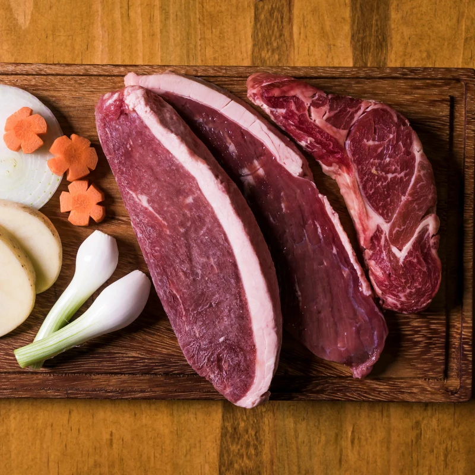
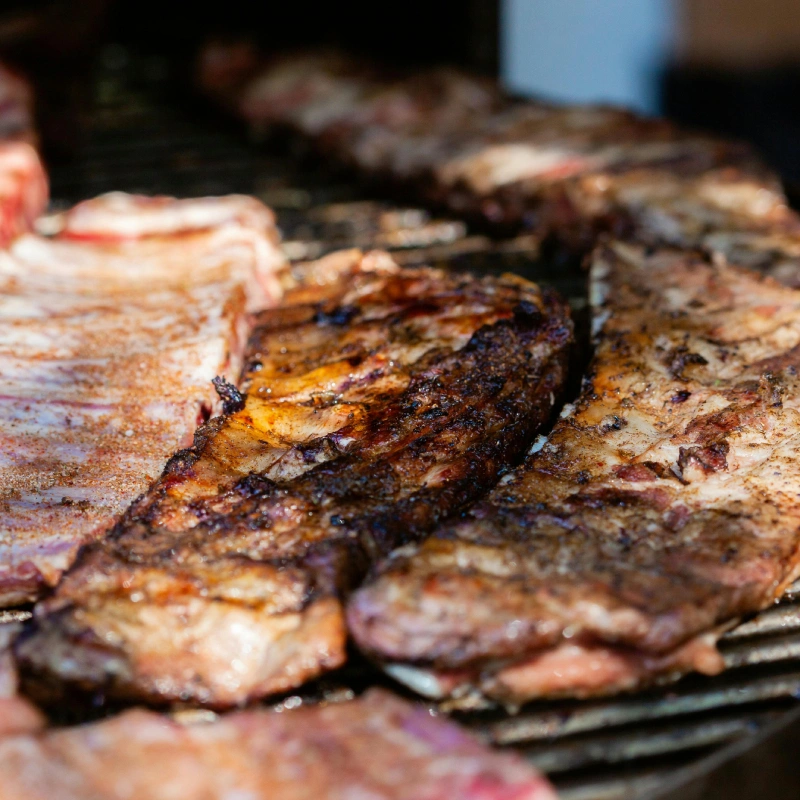
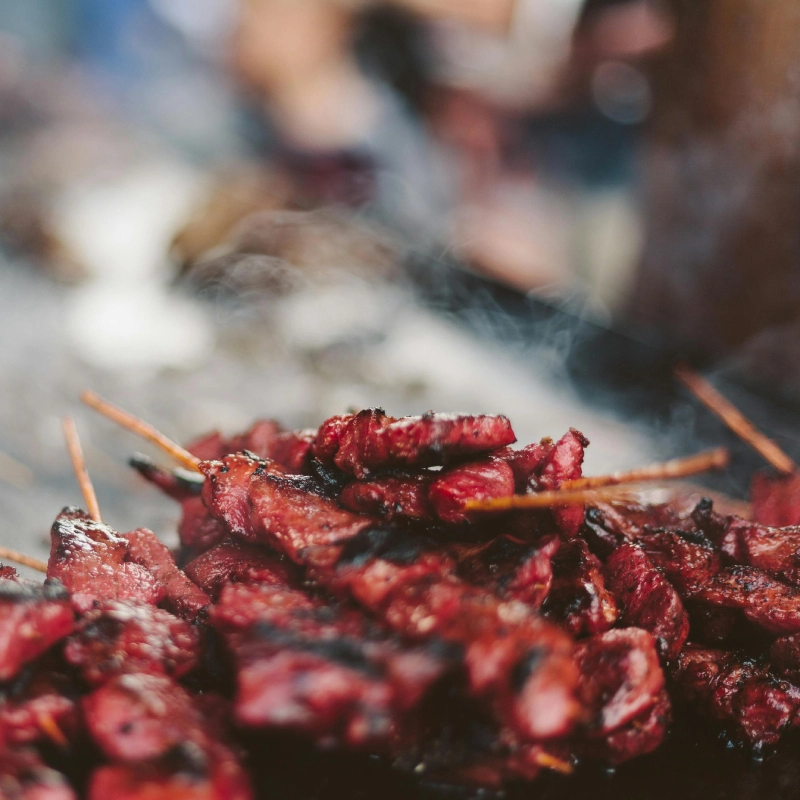

Corte nobre grelhado na parrilla, servido com farofa de banana da terra e molho especial da casa.

Costela de peixe amazônico lentamente cozida no fogo, acompanhada de pirão cremoso e vinagrete.

Lombo macio caramelizado com melado de cana, servido com mandioca cozida e molho barbecue.
* Dados de contato e links fictícios exclusivos para demonstração de portfólio.